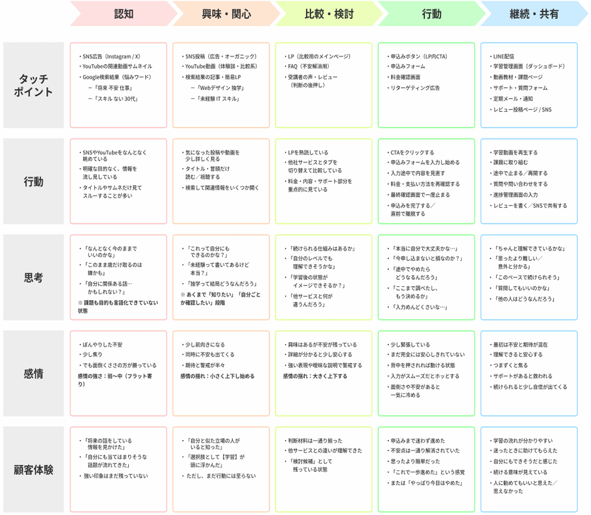
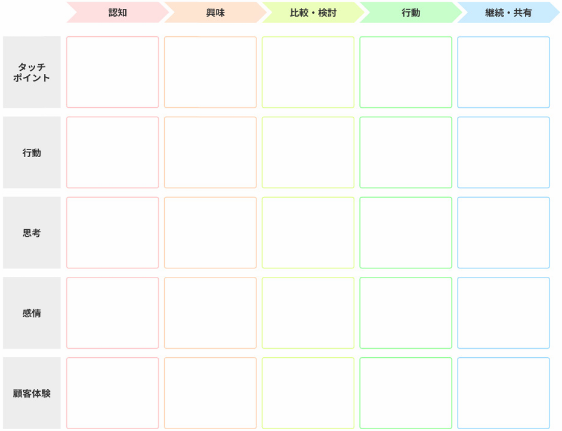
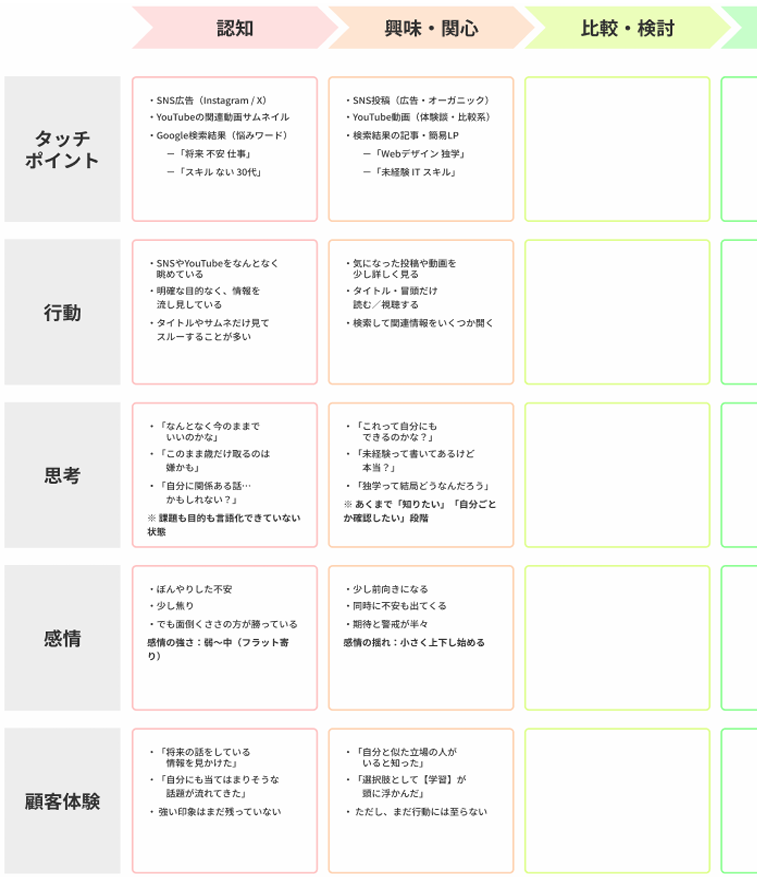
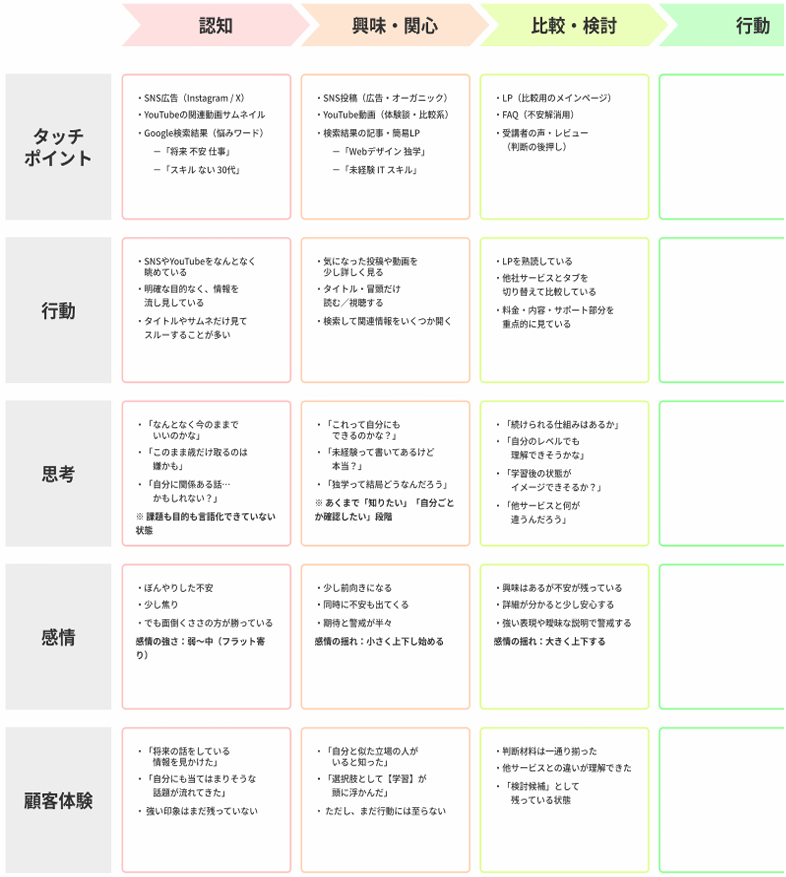
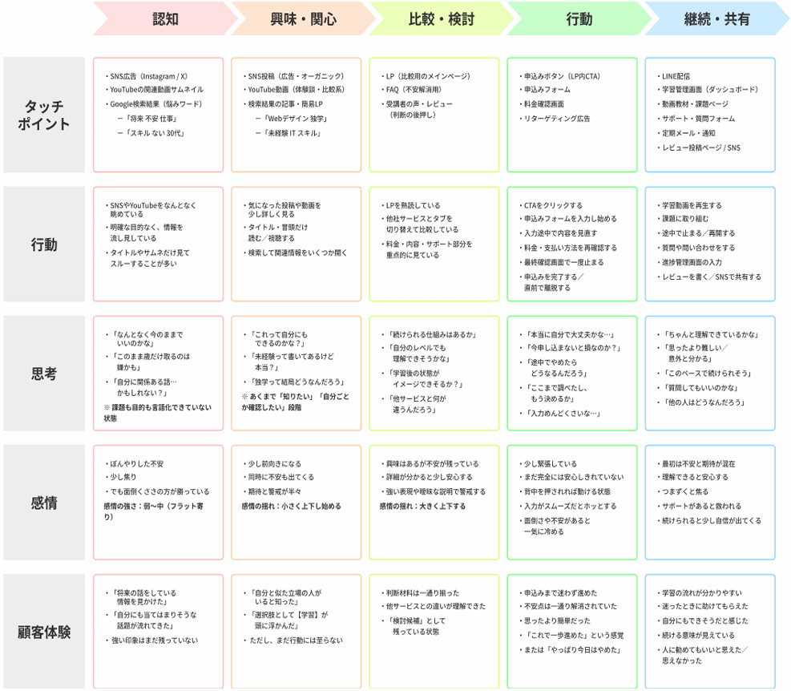

これまでの章では、市場・顧客・競合・自社を分析し、さらにペルソナ設計によって「誰に向けて作るのか」を具体化してきました。
ここまでで、狙う市場と、向き合う人物像は整理できました。ただし、ペルソナは「誰の判断か」を固定するものであり、その人が「どの段階で、何に迷っているか」までは決めません。
そのため、制作の現場では次のような判断が残ります。
これらは「誰か」だけが分かっていても決めきれません。なぜなら、ユーザーは常に同じ状態でページを見ているわけではないからです。
同じペルソナであっても、製品やサービスに触れる段階は変化します。
段階が違えば、必要な情報も、伝え方も、配置も変わります。この違いを無視して制作を行うと、
といった、伝わらないWebコンテンツになりがちです。こうした問題を防ぐために用いる考え方が、カスタマージャーニーです。
この章では、ユーザー体験を複数のフェーズに分け、各フェーズで「必要な情報」「期待される判断」「適切な導線」を言語化し、設計と制作の判断ができる状態を作ります。
カスタマージャーニーとは、ユーザーが商品やサービスと出会い、理解し、判断し、行動に至るまでの一連の体験の流れを指します。
重要なのは、「購入」や「申込み」といった結果だけを見るのではなく、そこに至るまでにユーザーが、「何を見て」「何を考え」「どこで迷い」「どのタイミングで前に進むか、あるいは離脱するか」といった時系列の体験を捉える点にあります。
カスタマージャーニーマップは、この体験の流れを、接点（タッチポイント）・行動・思考・感情・顧客体験として整理し、俯瞰できる形にしたものです。
カスタマージャーニーマップのイメージ
Web制作やLP制作では、つい「このページで何を伝えるか」「このCTAをどう配置するか」といった単体最適の判断に意識が向きがちです。
しかし、ユーザーはそのページだけを見て判断しているわけではありません。
たとえばLPに訪れるまでにも、ユーザーは以下のような複数の接点（タッチポイント）を通過しています。
カスタマージャーニーを考えずに制作すると、
といった体験のズレが起こりやすくなります。
カスタマージャーニーマップは、「このページは、ユーザー体験のどの地点にあるのか？」を明確にするための設計図であり、制作者側が「いま、ユーザーは地図のどこにいるのか」を確認するためのものです。
前章で扱ったペルソナ設計は、「誰の判断を再現するのか」を定めるものでした。一方、カスタマージャーニーは、そのペルソナが、どの順番で、どんな体験を積み重ねていくかを整理するものです。
つまり、両者は以下の関係があります。
ペルソナが曖昧なままカスタマージャーニーを描くと、「誰の行動なのか分からない平均的なストーリー」になりがちです。逆に、ペルソナだけがあっても、
などが見えなければ、制作の改善にはつながりません。
ユーザー体験には、時系列で状態が変化する「フェーズ（段階）」があります。ただし、これは必ず直線的に進むものではなく、前後に行き来することもあります。
本教材では、制作判断に使いやすい粒度として、体験を5つのフェーズに整理します。この5分割は唯一の正解ではありませんが、情報の優先順位、見せる順番、CTAの強さ、不安解消の配置を判断するには十分な枠組みです。
以下が、代表的な5つのフェーズと、主なWebの接点（タッチポイント）の一例です。
| フェーズ | ユーザーの状態 | 主なWebの接点 |
|---|---|---|
| 1. 認知 | 存在を知る・気づく | SNS、広告、検索結果、口コミ |
| 2. 興味・関心 | 少し気になる・関係ありそう | SNS投稿、記事、動画、簡易LP |
| 3. 比較・検討 | 本格的に調べる・迷う | LP、公式サイト、レビュー、FAQ |
| 4. 行動 | 購入・申込み・利用開始 | 申込みフォーム、購入画面 |
| 5. 継続・共有 | 使い続ける・評価する | メール、アプリ、SNS、サポート |
この5フェーズは、ユーザーの行動・思考・感情が切り替わる単位として扱いやすく、制作側の「今どの状態の相手に、何を渡すべきか」を整理するために有効です。
ここからは、フェーズごとに「ユーザーがどんな状態にあり、何を考え、どこで迷うのか」を整理します。
このようにフェーズを分解すると、以下を整理しやすくなります。
次のセクションでは、各フェーズに対して、「行動」「思考」「感情」「接点（タッチポイント）」「顧客体験」を縦軸として並べ、体験をマップとして整理する方法を見ていきます。
ユーザーの行動、5つのフェーズイメージ
前のセクションでは、ユーザー体験を時間軸（横軸）＝5つのフェーズに分解しました。これにより、「認知」「興味・関心」「比較・検討」「行動」「継続・共有」という体験の流れを、制作判断に使える形で整理しました。
次に必要になるのが、縦軸となる要素です。縦軸では各フェーズにおいて、
といった体験の中身を配置していきます。
この縦軸があることで、「なぜこの構成なのか」「なぜこの順番なのか」「なぜこの導線なのか」といった制作判断を、ユーザー体験を根拠に説明できるようになります。また、チーム内で「今の相手はどの状態で、どこが詰まっているか」を共通言語として扱いやすくなります。
カスタマージャーニーの縦軸は、必ずこの形でなければならないものではありません。ただし、制作改善に必要な情報を過不足なく揃えるには、一定の型がある方が扱いやすくなります。今回は一例として、「接点（タッチポイント）」「行動」「思考」「感情」「顧客体験」の5つを基本の縦軸として扱っていきます。
接点（タッチポイント）とは、ユーザーが商品・サービスと接触する場所や媒体のことです。Web制作において代表的な接点には、「SNS（投稿・広告）」「検索結果」「LP」「公式サイト」「メール」などがあります。
重要なのは、「どのフェーズで、どの接点に触れているか」を整理することです。
行動とは、ユーザーがそのフェーズで実際に取っている具体的な行動です。ポイントは「こうしてほしい理想の行動」を書くのではなく、起きていそうな現実の行動を書くことです。
思考とは、ユーザーが行動の裏側で頭の中で考えていることです。ここでは、論理的に正しいかどうかよりも、作成したペルソナがその状況で抱きそうな考えを言語化することが重要です。
感情は軽視されがちですが、行動に強く影響する要素です。特に重要なのは、感情が下がる瞬間・動く瞬間を把握することです。
顧客体験とは、そのフェーズ・その接点において、ユーザーが最終的にどう理解し、どう受け止めたかを短くまとめたものです。感情や思考の「結果としての認識」を書く場所になります。（感情＝その場の揺れ、顧客体験＝受け取りの結論、という役割分担です。）
ここまでで、「5つのフェーズ（横軸）」と「各フェーズで整理する5つの体験要素（縦軸）」が揃い、カスタマージャーニーマップの構造的な土台が整いました。
これによって、
などを、体験の流れとして捉えられる準備ができました。
次のセクションでは、ここまで整理した横軸と縦軸を実際に組み合わせ、カスタマージャーニーマップとして1枚に落とし込む方法を見ていきます。
カスタマージャーニー・縦×横軸のイメージ
ここまでで、カスタマージャーニーマップの骨組みは出そろいました。
この2つを組み合わせることで、「ユーザーが、いつ・どこで・何に触れ・どう感じ・なぜ次に進む／止まるのか」を1枚のマップとして把握できる状態になります。
カスタマージャーニーマップを作成する際は、次の流れで整理すると進めやすくなります。
ただし、この工程を全フェーズ分、最初から丁寧に行うとボリュームが大きすぎるため、今回は、LP制作やWebコンテンツ設計と関係が深い「比較・検討フェーズ」を中心に、マップの具体化を進めます。
このセクションでは、比較・検討フェーズに入る前提として、認知フェーズと興味・関心フェーズまでの流れを確認します。
なお、ここで扱うカスタマージャーニーは、第4章で例として出したペルソナを前提とします。具体的には、以下の人物像です。
このペルソナが、やがて「情報収集・比較検討フェーズ」に入ったとき、どのような体験をしているのかを、縦軸に沿って落とし込んでいきます。
あらかじめ、認知フェーズと興味・関心フェーズまでを埋めたマップを用意しました。比較・検討フェーズを埋める前に、そこまでの流れを見ていきましょう。
認知、興味・関心フェーズを埋めたマップ
この段階のユーザーは、まだ「学習サービスを探そう」とは考えていません。なんとなくの不安や、うまく言語化できない違和感を抱えている状態です。
たまたま情報を目にして、初めてその存在を知る、という入り方になります。このフェーズでは、課題の自覚が弱く、行動を起こす準備もできていません。
次にユーザーは、認知をきっかけに「もしかすると自分に関係がある話かもしれない」と感じ始めます。
この段階でも、ユーザーはまだ比較や決断をしていません。あくまで「自分の状況と情報をすり合わせる」「検討する価値があるかを測る」という状態です。
ここまでの2フェーズをまとめると、ユーザーは次のような特徴を持ちます。
つまり、この時点の体験は「比較や判断のための情報収集」ではなく、自分ごと化の準備段階だと整理できます。
この状態を経て、ユーザーはようやく次の段階へ進みます。
これが「情報収集・比較検討フェーズ」です。LPや公式サイトが特に重要になりやすいのは、このフェーズです。
では次に、比較・検討フェーズを実際に落とし込んでいきましょう。
比較・検討フェーズでは、ユーザーはすでに「検討する価値があるかもしれない」という前提でページを見ています。
この段階での制作は、興味を引くことでも、勢いで行動させることでもありません。やるべきことは一貫しています。
このフェーズのユーザーは、次のような状態にあります。
つまり、判断材料が不足していたり、根拠が弱いページほど、候補から外されやすい段階だと言えます。
このフェーズでまず整理すべきなのは次の点です。
ここは推測で断定するのではなく、前章で作成したペルソナと、認知・興味関心フェーズの体験から「仮説として」導きます。
今回のオンライン学習サービスのペルソナであれば、
といった点が、判断の軸になりやすいと考えられます。
ここからは、カスタマージャーニーマップの縦軸に沿って、どう考えて、どう書き込むかを整理します。
このフェーズの主な接点は、以下になります。
ここでは「とりあえず全部置く」ではなく、ユーザーが判断のために辿りやすい順番を意識します。
例）「まずLPで全体像を把握」→「気になる点をFAQや詳細ページで確認」→「最後にレビューを見る」
ユーザーはこの段階で、次のような行動を取りやすくなります。
ここで重要なのは、「理想的な行動」ではなく「起きがちな行動」を書くことです。
比較・検討フェーズの思考は、かなり具体的になります。
このフェーズの感情は、安定していません。
感情の上下が激しいため、「安心できるかどうか」が判断を大きく左右します。
ここでは、そのフェーズを終えた時点での「受け取り」を短くまとめます。（感情＝揺れ、顧客体験＝受け取りの結論、という役割分担です。）
ここがネガティブな受け取りになると、行動フェーズに進みません。
比較・検討フェーズのここまでの内容を、実際にマップに落とし込むと以下のようになります。これで、残りの行動、継続・共有フェーズも埋めていきます。
比較・検討フェーズまで埋めたマップ
最後に、このフェーズでよく起きる失敗を整理しておきましょう。
比較・検討フェーズのマップは、「どこで迷っているのか」「何が足りていないのか」「なぜ決めきれないのか」を構造として可視化するためのものです。
この1フェーズを正しく埋められれば、「LPに何を書くべきか」「どこにFAQを置くべきか」などが判断しやすくなります。
残りのフェーズについても落とし込んでいきます。「行動フェーズ」と「継続・共有フェーズ」を埋めると、ジャーニーマップは完成です。
比較・検討フェーズを経て、ユーザーは「候補」をある程度まで絞り込んだ状態にあります。この段階のユーザーは、すでにサービスの内容や違いを理解しており、新しい情報を探しているというよりも、「最終判断のための確認」をしている状態です。
行動フェーズでユーザーが見ているのは、以下のような「最後のひっかかり」です。
つまり、このフェーズは「説得する段階」ではなく、判断を止めている要因を取り除く段階だと整理できます。
この時点で強く効くのは、次のような「行動を妨げない設計」です。
逆に、情報が不足していたり、分かりにくさや手間があると、ユーザーは「また後で」と判断を先送りし、離脱する可能性があります。
行動フェーズを経て、ユーザーは実際にサービスを利用し始めます。この段階では、LPやコピーの役割は小さくなり、ユーザーが向き合うのは「実際に使ってみた体験」や「想像していた内容とのズレ」といった、現実の体験そのものです。
継続・共有フェーズで重要になるのは、
この体験がポジティブであれば、「継続利用につながる」「他人に勧める」「レビューや感想を発信する」といった行動が自然に生まれやすくなります。一方で、体験が期待と大きくズレていたり、不親切さが目立つと、ユーザーは静かに離れていきます。
この2つのフェーズを埋めて、カスタマージャーニーマップは完成します。
継続・共有フェーズまで埋めたマップ（完成版）
ここまでの5フェーズを通して見ると、ユーザーは一直線に進むとは限りません。戻ることもあれば、迷うこともあります。一度止まって、また進むこともあれば、二度と戻らないこともあります。
カスタマージャーニーは、そうした揺れを前提に、「その時点での状態」を整理するための枠組みです。
各フェーズでユーザーが置かれている状態を理解することで、以下の判断がしやすくなります。
ここまで、カスタマージャーニーを以下の流れで見てきました。
このマップを使うことで、
といった制作判断を、感覚ではなくユーザー体験を根拠に説明できるようになります。
特にLP制作では、「比較・検討フェーズで判断材料を揃えられているか」「行動フェーズで最後の不安や手間を増やしていないか」を誤ると、見た目が整っていても成果につながりにくくなります。
この視点があるだけで、ページ構成、導線、コピーの判断精度は大きく上がります。
【やること】
【前提条件】
【やること】
【前提条件】